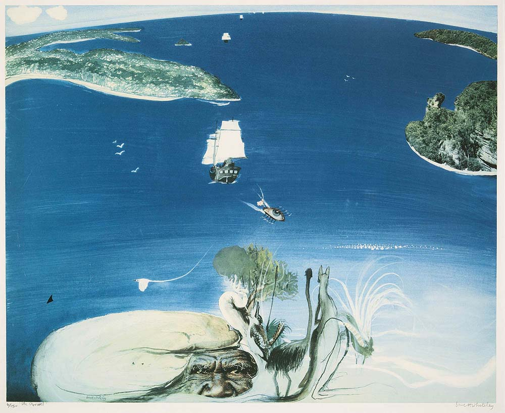
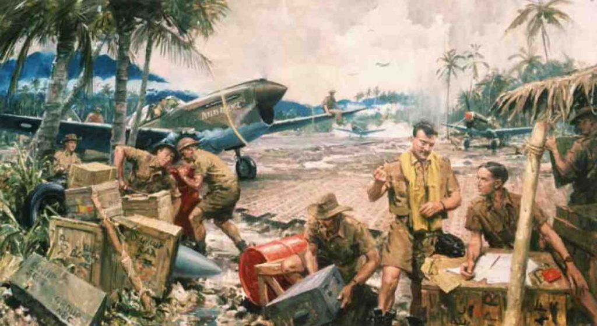

"Arrival" by Brett Whiteley, painted for the Bicentennial celebrations of the arrival of the First Fleet on 26 January 1788We’re a weird mob, we Australians, even weirder than we were in 1957 when John O’Grady wrote his book of (roughly) that name. We celebrate Australia Day on each anniversary of the establishment by Britain of an offshore detention prison in a sh**hole on the far side of the world on 26 January 1788. Neither the convicts nor their guards wanted to be here at all. They certainly didn't arrive with the hope of building a new nation (although later free settlers did). But that date also marked the beginning of a shameful period when our forefathers butchered tens of thousands of Aboriginal people to deter them from objecting to having their lands stolen, while inadvertently killing hundreds of thousands more by introducing exotic diseases to which they had no resistance.
Nevertheless, according to no less an authority than former prime minister Tony Abbott, you can make a good case for the proposition that Governor Arthur Phillip was Australia’s George Washington. He was certainly more enlightened and thoughtful than most of the Governors who followed him, but the Washington comparison is a tad hyperbolic, not to mention the fact that Washington fought for America's freedom from Britain whereas Phillip was Britain's prison warden.
Our other important national holiday commemorates a huge and bloody military defeat where our young soldiers pointlessly stormed the cliffs of Gallipoli at the behest of pompous English politicians and buffoonishly inept military commanders, were slaughtered in their thousands and then withdrew again.
Arguably our single most popular national hero is Ned Kelly, who many thought was quite a nice chap for a cop-killing bank robber; while our most popular national song is about a sheep-stealing swagman who committed suicide by drowning himself in a billabong rather than be captured by the cops.
Then there’s our most legendary local event, involving a rebellion at Eureka Stockade at Ballarat by a biggish group of tax-evading gold miners, who have more recently become heroic figures for modern-day white supremacists and neo-nazis.
Nevertheless, there’s something strangely attractive about the laconic affection of us Aussies for people and events that the citizens of many other nations would regard as the very antithesis of heroic. Better, for example, than the habitual jingoistic hubris and boastful triumphalism currently epitomised by President Trump. The mythical self-image of the Aussie is embodied by a seemingly happy-go-lucky bloke who only reveals his inner steel when needed, like Hoges’ “That’s not a knife, THIS is a knife”.
In the best of all worlds we wouldn’t need to foster nationalist sentiment at all, whether of the laconic or loudly boastful variety. In one sense Samuel Johnson was right. Patriotism really is the last refuge of the scoundrel (think Peter Dutton, Pauline Hanson or Tony Abbott drawing spurious “battlelines” for momentary political advantage). Mind you, our reactionary leaders’ inflammatory dog-whistling reliably finds a significant minority audience. Old Sam Johnson didn’t mention the legions of drunken bogan bone-heads driving around in flag-bedecked utes festooned with stickers reading ‘Aussie! Aussie! Aussie! Oi! Oi! Oi!’, ‘Australia, Love It or Leave It’ and ‘Fuck Off We’re Full’.
But in the real world, as theorists like Jonathan Haidt argue, we are all pre-programmed by thousands of years of evolution and social conditioning to be tribal or communal creatures. Although nearly all Australians live in huge prosperous metropolises where in reality we are comfortable and have little to fear, we still yearn for a sense of belonging in a small tribal community, and that requires defining ourselves against the “other” whom we must fight to preserve our Australian values (Oceania versus Eastasia). If an internal enemy doesn’t actually exist, as in modern-day Australia, then our more scoundrel-ish leaders will create fictitious enemies (Asians, Muslims, Africans, Aborigines, welfare recipients) for short-term partisan advantage and draw “battlelines” so that right-thinking Australian patriots know who they should hate.
Moreover, on an international level, the potentially aggressive Westphalian nation state isn’t about to wither and die. We won’t be able to relax, disarm, sing Kumbaya and leave our future confidently to the United Nations or even the European Union (assuming we could get a wider free entry pass than the one that currently allows us to enter the Eurovision Song Contest). Some sort of sense of national unity/identity will remain necessary for the foreseeable future, and it will need to be nurtured and curated sensitively but continuously. That’s a bit tricky for Australia, despite the fact that we can truthfully if laconically boast that we are one of the world’s most successful multicultural societies. We only achieved that admirable outcome through careful nurturing by generations of politicians and bureaucrats since we decided to embark on a Mass Migration Policy in the wake of World War 2, having decided that populating was preferable to perishing.
We eventually abandoned the legal structure of both White Australia and legalised discrimination against Indigenous Australians, but the psychic traces of those forms of white tribalism remain evident, and Australia Day is the most prominent example. Cultural evolution isn’t as slow as its biological namesake, but it doesn’t happen overnight either. Moreover, tribalism tends to re-emerge with renewed virulence in times of uncertainty and insecurity, such as today when real incomes have been stagnant for 3 or 4 years and the US and North Korea are threatening to nuke each other.
So how do we curate the continuance and further development of a durable, secure, civilised, multicultural Australia of which we can continue to be proud? A national holiday that celebrates Australian national values is potentially a valuable tool: helping to nurture broad and fundamental values like unity in cultural diversity, love of democracy, basic civil liberties, equality of opportunity and mutual respect or at least tolerance. But is it feasible to achieve those objectives if Australia’s national day remains fixed on 26 January, when that date is deeply offensive for so many First Nations Australians? How does the date assist in forging unity from not only diversity but bitter division? NT Chief Minister Michael Gunner made an attempt at squaring that circle in a statement a couple of days ago:
Although acknowledging the date of the national holiday was divisive, Mr Gunner said Australia Day should be about unity.
“January 26 must meaningfully acknowledge the entire story of our nation. This means more than acknowledgement of country and a smoking ceremony,” he said.
“It means a genuine celebration of the Aboriginal contribution to our national identity. A celebration of all this continent’s waves of immigration.
Prominent Indigenous lawyer Shireen Morris advanced a similar argument rather more carefully in an article titled ‘Don’t Change the Date, Change Its Meaning’ in which she argued that the Indigenous Voice to Parliament and Makarrata Commission proposed by the Uluru Statement From the Heart should both be introduced and implemented on 26 January. It’s an interesting idea, and should in a rational country result in our national day becoming a celebration of developing harmony and national unity rather than of division and white supremacy, but whether those white supremacists and more general reactionaries would allow that to happen is another question. We might be better leaving 26 January as a public holiday to be celebrated by those who wish to do so for whatever reason, perhaps changing its name to “First Fleet Day”. We could then seek agreement on a more inherently unifying national day devoid of the poisonous overtones of white genocide indelibly imprinted on 26 January. Some argue for New Year’s Day - the anniversary of the commencement of the Australian Constitution on 1 January 1901); others 9 May - the anniversary of the first sitting of Federal Parliament on 9 May 1901); still others 3 March - the anniversary of the commencement of the Australia Act (Cth) on 3 March 1986, which completed Australia’s gradual progression to full sovereignty – leaving aside the fact that we still have an English monarch bearing the fictitious title “Queen of Australia”. None of those dates carry the inspiration or romance of (say) American Independence Day (the anniversary of US victory over British colonialism on 4 July 1776) or Bastille Day (when France overthrew its oppressive monarchy on 14 July 1789). Nor for that matter New Zealand’s Waitangi Day (the anniversary of the Treaty of Waitangi with its Maori people signed on 6 February 1840).
Australian Independence Day
But Australia actually DOES have a date, 9 October 1942, which commemorates events just as inspiring as the American War of Independence or the French Revolution, and arguably just as constitutionally significant as the Australia Act 1986 or even the commencement of the Australian Constitution. The Constitution, while creating our structure of national governance, did not actually make Australia a nation with sovereign independence from Britain. In the short term it merely gave birth to a federated British colony, with the “mother country” retaining the power to make laws for us or override existing laws by “paramount force” whenever it chose. The Statute of Westminster Adoption Act 1942 was introduced into Parliament on 1 October 1942 and proclaimed on 9 October 1942, with its commencement notionally backdated to the commencement of World War 2 on 1 September 1939. As Chris Clark explained in an article about an aspect of this story that I intend discussing in a later post:
Under the Statute, Britain and its Dominions were defined as ‘autonomous communities within the British Empire, equal in status, in no way subordinate one to another in any respect of their domestic or external affairs, though united by a common allegiance to the Crown and freely associated as members of the British Commonwealth of Nations’. Under this arrangement, the Dominions were finally sovereign governments in their own right, able to amend or repeal British legislation applying to them as they saw fit, while the British Parliament was prevented from legislating on their behalf unless specifically requested to do so.
All that was necessary to effect this change was for the national parliament of each Dominion to pass a measure formally adopting the Statute. This Australia had failed to do, unlike Canada, South Africa and Eire (the Irish Free State), which all quickly took up the enhanced national status on offer. Under conservative governments which followed the expulsion from office of the last Labor ministry led by James Scullin in 1932, Australia (with New Zealand) had preferred to hang back and cling to the safety net of the past. There had, in fact, been an adoption Bill twice introduced into Parliament in 1937, while Menzies was Attorney-General, but it received so little priority that it was allowed to lapse for want of time on each occasion.
The Battle of Australia
However, in addition to its considerable constitutional significance for Australia’s sovereignty, 9 October 1942 also marks events in Australia’s history that should be every bit as inspiring for Australians as American Independence Day or Bastille Day for the Americans and French respectively. The date closely coincides with Australia’s successful defence of our nation from Japanese attack. Most people still assume that Australia has never come under severe attack or been subject to the imminent risk of invasion and conquest by a foreign power. But that isn’t the case, even though the risk was downplayed at the time to avoid causing community panic.

Milne Bay September 1942 by William Dargie Largely unaided by either British or US forces, Australian forces repelled a Japanese attack on the large Australian base at Milne Bay in Papua New Guinea on 7 September 1942, preventing the Japanese from attacking Port Moresby from the sea as their land-based forces advanced down the Kokoda Track. The Australian victory at Milne Bay was the first time Japanese forces had been defeated since they had begun their expansionary military conquests into China in the 1930s. Moreover, by 28 September 1942 the Japanese advance down the Kokoda track had halted within sight of Port Moresby, and on that night Japanese forces began quietly withdrawing back northwards up the Track, eventually departing from their original bridgeheads in Gona and Buna on the north coast by February 1942 after months of intermittent but bitter fighting with pursuing Australian forces. The Japanese decision to retreat occurred partly because their High Command had realised that their supply lines were over-extended, especially in light of the recently-commenced US attack on Japanese-occupied Guadalcanal, but partly also because the Australian defending forces had proven adept at jungle guerilla warfare and inflicted much heavier casualties on the Japanese than they had expected. Thus the imminent threat of invasion of Australia effectively ended on 28 September 1942, just three days before the Statute of Westminster Adoption Act 1942 was introduced into Parliament, although the full significance of the Japanese retreat wasn’t realised until quite a bit later. It spelled the end of ten months of increasingly mortal peril for the Australian nation. That ten month period began with the surprise Japanese attack on Pearl Harbour on 7 December 1941, which resulted in the US formally entering the War against both Germany and Japan, ending its previous stance of isolationism. The Japanese invasion of the Philippines, then an American possession, began the next day with General MacArthur eventually withdrawing to Australia on 11 March 1942. With Japanese forces already advancing rapidly down the Malayan Peninsula throughout December 1941 and January 1942 towards the British “impregnable bastion” of Singapore, Prime Minister Churchill sought an urgent meeting with US President Roosevelt and his military commanders in Washington on 23 December 1941. However, far from seeking American support to defend Singapore and British Pacific possessions including Australia, Churchill actually wanted almost exactly the opposite. He feared that the US would concentrate on the Pacific War in the wake of Japan’s attack on Pearl Harbour and would leave Britain to fight Germany and Italy with minimal support. Churchill pressed for a secret “Germany First” strategy, and after a series of secret pre-Christmas meetings Roosevelt agreed. But no hint of the secret Arcadia Agreement was given either to the public or other Allies including Australia:Churchill appreciated that the "Germany First" war strategy would put Australia, British Malaya, the Philippines, and the rest of South-East Asia at serious risk of Japanese occupation if Japan entered the war on the side of Germany and Italy. However, this prospect does not appear to have greatly concerned Churchill whose top war priorities were the defence of Britain, support for the Soviet Union against Nazi Germany, defending the Suez Canal, and protecting India. As Churchill saw it, the Philippines, Australia, British Malaya, and the Dutch East Indies could be recovered from Japanese occupation after Germany had been defeated. …
The Commander in Chief of the US Navy Admiral Ernest J. King ... agreed in principle with Churchill's "Germany First" war strategy, but he insisted that the vaguely worded Arcadia agreement include words that would permit the United States to defend positions in the Pacific that were deemed necessary "to safeguard vital interests". The words "vital interests" were not defined, and King argued successfully for inclusion in the agreement of words authorizing the seizure of "vantage points" from which a counter-offensive against Japan could be developed.
The Arcadia Conference ended with Churchill and the US Army believing that the United States would pursue a war strategy that placed total priority on defeating Germany and relegated the Pacific to a secondary theatre in which the United States would pursue a passive defensive posture until such time as Germany had been defeated. The US Army position was largely motivated by self-interest. The generals knew that there would be little employment for two million under-trained American soldiers in the difficult island fighting that characterized the Pacific War. The only place to deploy an army of two million recruits was on the continent of Europe, and the American generals were determined to send them there.
The US Navy was well satisfied with the final wording of the Arcadia agreement. Churchill may not have realized it, but Admiral King was determined to prevent Australia becoming part of the Japanese empire and to secure the lines of communication between Australia and the United States. The Pacific Fleet had been savaged by the treacherous Japanese surprise attack on Pearl Harbor, but the four American fleet carriers had survived. Admiral King had been authorized by Arcadia to "safeguard vital interests" and seize "vantage points" in the Pacific from which a counter-offensive against Japan could be developed. King interpreted the wording of the Arcadia agreement as allowing him to go on the offensive against Japan with the limited naval resources available to him.
Curtin had earlier spoken with Churchill and been given certain assurances:
Although repeatedly assuring Australia's Prime Minister John Curtin of the British government's commitment to the defence of Singapore, the British Prime Minister Winston Churchill had already written off the defence of Singapore as a lost cause when he was giving those assurances. He knew that Singapore was only a "cardboard fortress", whose defenders lacked tanks, artillery, adequate air defences, and modern fighter aircraft. After Japan entered the war on the side of its Axis partners Germany and Italy, Churchill was only interested in saving Burma and India in the Asia-Pacific region, and he ignored pleas from Curtin for meaningful reinforcement for the defenders of Singapore. Although not admitting this to Curtin, Churchill was obsessed with defeating Germany and was prepared to abandon Australia to the Japanese if they wanted it.
To ease Curtin's deepening concern for Australia's safety, and resist Australia withdrawing its military forces from Britain, North Africa, and the Middle East, Churchill assured Curtin that a British fleet would be dispatched to save Australia if Japan invaded in massive strength. This was a lie. Churchill had no intention of sending a British fleet to save Australia from a Japanese invasion. He had already betrayed Australia at the Arcadia Conference (see above).
Curtin was becoming convinced during December 1941 that Churchill's assurances of British military support for Australia against Japan were worthless, and he was not prepared to see Australia abandoned by the British to a Japanese invasion. On 26 December 1941, the Australian Prime Minister addressed the nation in a radio address that made it quite clear that Australia was in grave danger from the Japanese and reflected Curtin's disillusionment with Churchill's assurances that Britain would furnish powerful support if Australia was threatened with Japanese invasion. In the course of this famous speech, which was published in the Melbourne Herald newspaper on 27 December 1941, Curtin said,
"Without any inhibitions of any kind, I make it quite clear that Australia looks to America, free of any pangs as to our traditional links or kinship with the United Kingdom."
The statement caused a sensation. Churchill was furious, and addressed an angry cable to Curtin. President Roosevelt mistakenly believed that Australia was a British colony in 1941, and felt that Curtin's speech smacked of disloyalty. When it was explained to Roosevelt later that Australia was an independent nation, the American President came to respect Curtin's strong leadership and patriotism.
By January 1942 it was becoming increasingly obvious that Churchill’s earlier assurances to Curtin were valueless and that Singapore would soon fall. Curtin ordered the battle-seasoned 6th and 7th Divisions of the Second AIF back from North Africa and the Middle East to defend Australia. The 7th Division embarked for the voyage home on 30 January, by which time the Japanese had already besieged Singapore Island. British engineers blew up the causeway between Johor and Singapore the next day 31 January. The British battleships Prince of Wales and Repulse had earlier been sunk by Japanese planes, and the Allies had completely inadequate air power to defend Singapore. Allied forces (including many Australians) surrendered to the Japanese on 15 February 1942. Four days later on 19 February 1942 the same Japanese carrier attack group that had bombed Pearl Harbour 10 weeks before launched an early morning bombing attack on Darwin in overwhelming numbers. More than 300 people were killed and both Australian and American shipping sunk. It was the first of more than 70 bombing raids on Australia's north over the succeeding two years. Nevertheless, even while the 2nd AIF troops were on their way back to Australia, Churchill made a last ditch attempt to get them to divert to Burma to defend British oil interests there. Curtin refused and ordered the ships to continue on to Australia, although he gave a sop to Churchill by agreeing to the disembarkation of a small number of troops to help defend Ceylon from Japanese attack. The rest of the 6th and 7th Division troops reached Australia in mid-March, and most of them were in due course redeployed to Papua New Guinea. Did Curtin exaggerate the Japanese threat to Australia? Some historians have subsequently asserted that Curtin exaggerated the extent of the Japanese threat to Australia. However the better view is that the peril was indeed both real and imminent:
There is a considerable body of evidence, including the views of distinguished historians, senior Japanese Navy officers, and the official history of Japan's involvement in World War II, to support a conclusion that the Japanese intended to become the masters of Australia in 1942, either by (a) invasion of northern Australia and severing Australia's lifeline to the United States, or (b) severing Australia's lifeline to the United States and then pressuring Australia into surrender to Japan. ...
Japan's top admirals and generals were aware even before Pearl Harbor that Australia represented a serious threat to Japan as an ally of the United States. They knew that the Americans would be able to use Australia and its two Territories on the island of New Guinea (Papua and the New Guinea League Mandate) as bases from which to launch their counter-offensive against Japan's greatly expanded southern defensive perimeter. Being conscious of this threat, Japan's military leaders were determined to isolate Australia from the United States, and bring Australia under Japanese control. It was only in the means deemed necessary to compel Australia's submission to Japan that there was a difference of approach. ...
At the beginning of the Pacific War, the Imperial Japanese Navy had operational responsibility for the Pacific Ocean area, including Australia and its island territories. To counter the perceived threat from Australia as an American ally, the admirals of Japan's Navy General Staff and Navy Ministry wanted to invade key areas of the northern Australian mainland in early 1942 to isolate Australia from American and British aid. To invade Australia, the Japanese Navy would require troops from the Japanese Army.
The generals of the Japanese Army General Staff, and the Prime Minister of Japan, General Hideki Tojo, appreciated that Australia posed a serious threat to Japan while it remained an ally of the United States. As early as 10 January 1942, the Army and Navy Sections of Imperial General Headquarters had resolved at a Liaison Conference to:
"Proceed with the Southern Operations, all the while blockading supply from Britain and the United States and strengthening the pressure on Australia, ultimately with the aim to force Australia to be freed from the shackles of Britain and the United States." ...
However, when the Japanese Navy requested troops for an invasion of Australia at a meeting of the Army and Navy Sections of Japan's Imperial General Headquarters on 4 March 1942, the generals refused. They had a different but equally sinister plan for bringing Australia under Japanese control. The Japanese generals did not see a need to commit massive troop and logistical resources to the conquest of the Australian mainland in the early months of 1942. The easy capture of Rabaul on 23 January 1942 and the first bombings of Darwin on 19 February 1942 had convinced the Japanese Army that Australia had little with which to defend itself from invasion. It was the sheer size of Australia that the generals saw as an immediate problem. The generals felt that their army resources had already been heavily overextended by Japan's rapid and massive territorial conquests, and that the Imperial Army needed time to consolidate its territorial gains. The Japanese Army was confident that Australia could be pressured into surrender to Japan by isolating it completely from the United States as part of an intensified blockade, and by applying intense psychological pressure. The Japanese plan to sever Australia's lifeline to the United States was given the code reference "Operation FS" (also known as "FS Operation").
By 7 March 1942, the Japanese Navy and Army had agreed that severing Australia's lifeline to the United States (Operation FS) and pressuring Australia into submission to Japan were more important objectives than the limited invasion of Australia's northern coast that the Navy had earlier proposed. At the Imperial General Headquarters Liaison Conference on 7 March 1942, the Navy General Staff and Navy Ministry agreed to their limited invasion proposal being deferred in favour of the Army plan to sever Australia's lifeline to the United States and then pressure Australia into total surrender to Japan. It is important to note that the Japanese generals did not rule out their support for an invasion by force if Australia did not surrender as they expected when the Japanese noose was tightened.
However, the Japanese naval defeats by the US in the Battle of the Coral Sea and then the Battle of Midway made it much more difficult for it to achieve the plan to compel Australian surrender by means of a blockade. They might still have imposed a successful blockade and compelled Australian surrender by launching attacks on our mainland from both air and sea, had they succeeded in capturing Papua New Guinea. The Japanese midget submarine attack on Sydney in May 1942 was a foretaste of what would have followed. Had Japan won complete control of PNG they would have been able to reinforce and resupply their forces by land, sea and air, and very likely enforce an effective blockade from both PNG and the Philippines. But that control was denied to them by the staunch defence by Australian forces both on the Kokoda Track and at Milne Bay. And that staunch defence was made possible by the reinforcement of mostly conscript Australian troops in PNG by the battle-hardened 6th and 7th Divisions. Moreover, it was Curtin’s courage and determination in standing up to both Churchill and Roosevelt and insisting on the return of those Divisions from North Africa and the Middle East that drove the unexpectedly staunch Australian defence. Had that not occurred, the existing hastily trained Australian conscripts on the Kokoda Track, including my then 18 year old Dad, might have met a very different fate and I would likely never have been born. There are some large and obvious lessons to be learned and a great deal of national pride to be taken from this wartime saga that ended in our nation being saved from foreign invasion and occupation, largely by our own efforts but with some American assistance. Strangely, few Australians even now really know about and understand what actually happened or its historical and national significance. It’s time that changed, and designating 9 October 1942 as Australian Independence Day is the way to do it. That change should also include incorporating a modification of Shireen Morris’s suggestion also to implement on that date the Uluru Statement From the Heart proposals for an Indigenous Voice to Parliament and Makarrata (treaty + truth and reconciliation) Commission. That would give us a national day that will unite Australians and make all of us take pride in what we have all achieved together.
wow, Australia became a Country on January 1. That is the OBVIOUS day.
Hi Homer
You obviously didn't actually read the article before commenting. As it notes, the commencement of the Australian Constitution on 1 January 1901 did NOT make Australia a sovereign nation, it merely made it a federated colony of Britain. Don't take my word for it, have a look at the Constitution itself, especially covering clause 8:
Country and self-governing colony are not necessarily exclusive categories. U dat anyone would contest that England and Scotland are countries, but England has no self-government at all.
Canada Day, 1 July, celebrates the commencement of what was then called the British North America Act 1867. I doubt most Canadians would argue that Canada did not become a country in 1867 because it was only a self-governing dominion. If only we had a treaty, we could celebrate that day, as New Zealand does,
really Ken, When did Australia become Australia? duh! Australia became a country period!
There's an obvious way to fix that problem :)
We could make it suffrage day, 22 December, celebrating the universal adult franchise in Australia that was granted ... in 1983. Before then Indigenous Australians could choose to vote in some situations, in others they were barred. It wasn't until the 1967 referendum that their numbers influenced the number and position of electorates (one consequence of counting them).
But Jan 1st would be almost as good a day to celebrate suffrage, since the 1901 paperwork largely removed the property requirement that counts as "universal" suffrage.
Hi Moz. I have a lot of sympathy with this argument; I have always thought of the 1983 Act as the final step for Indigenous people. But it's too legalistic for most people; I sadly doubt it would ever find much backing.
By the way, can I ask where Indigenous people were still actually barred from voting at the start of 1983, as opposed to not being required to vote like everyone else?
I'm going off wikipedia because it summarises and links: https://en.wikipedia.org/wiki/Voting_rights_of_Indigenous_Australians#Expansion_to_full_Aboriginal_franchise
According to the AEC, in 1965 Queensland graciously permitted Aboriginal and Torres Strait Islanders to vote if they wished, so they lagged even the NT (Federal legislation overrode NT laws in 1962). That was the last outright ban.
http://www.aec.gov.au/indigenous/milestones.htm
There's a lot of weasel wording going on, because the laws making it on offense to "induce aboriginal persons to enrol or vote" weren't struck down until later, and I can't find the repeal date for that law.
https://www.creativespirits.info/aboriginalculture/selfdetermination/voting-rights-for-aboriginal-people
Similar to 1901, when technically some aborigines in SA could vote, but almost none knew that and there were "difficulties" for the few who did know and tried to vote. I can't find stories online, but there's a display in a museum in Brinkworth on the topic.
http://www.abc.net.au/news/2017-05-30/south-aust-history-of-aboriginal-australians-voting-rights/8572140 "Several historical references revealed Aboriginal women were actively discouraged from voting at Raukkan in the 1896 election."
The source for not being allowed to encourage aborigines to vote seems to be the ABC or the Guardian and they give 1983 as the repeal date: http://www.abc.net.au/news/2016-04-27/educational-images-show-history-of-aboriginal-voting-rights/7360302
https://www.theguardian.com/commentisfree/2016/jun/30/only-58-of-indigenous-australians-are-registered-to-vote-we-should-be-asking-why
but neither give references and I can't find the legislation online
Arrgh, the site ate my reply. normally an empty response to hitting the "post comment" button means I can refresh to see my reply. But in this case nope, and my clipboard just contains the last search term. So, sorry David, here's the short version: sorry, can't find the law that was repealed in 1983 that made it an offense to encourage an aboriginal person to vote.
Guardian and ABC both have articles that mention it, but no actual reference:
https://www.theguardian.com/commentisfree/2016/jun/30/only-58-of-indigenous-australians-are-registered-to-vote-we-should-be-asking-why
http://www.abc.net.au/news/2016-04-27/educational-images-show-history-of-aboriginal-voting-rights/7360302
And now I can't tell whether I'm being silently moderated because I have links in my post (to the AEC and ABC, notoriously biased political sites that they are) or whether this site is utterly stuffed. Sorry.
David, if I include links in my reply it gets eaten by the site. But wikipedia's voting history page has a summary that ended up being a useful base for research.
Also, on further thought 1901 would be a terrible day for the same reason Jan 26th is, since on that day voting rights were standardised. By which I mean that Aborigines in SA who could previously vote lost that right unless they had previously voted. And considerable effort had been expended in SA to prevent them doing so. Let's not celebrate that.
The last explicit ban was Queensland, lifted in 1964. But after that enrolling was optional and it was an offense to encourage aboriginal people to vote until 1983 (ABC and Guardian articles, neither have references and I can't find the legislation sorry). So technically they could vote, but... I wonder if whoever ran the elections then was exempt from that restriction, since it would conflict with the requirement to tell citizens that everyone enrolled should vote or risk a fine :)
I think there may be a max number of links per comment after which it deems you to be spam.
The commencement of the Constitution made no changes to the franchise. Until the Commonwealth franchise Act 1902 anyone who could vote in a state could vote in federal elections. Weirdly, in an attempt to reassure Maori, the act denied the franchise to any aboriginal native of Australia Asia Africa or the Islands of the Pacific except New Zealand'.
Moz,
If the machine eats your homework, shoot me an email on ngruen AT Gmail and I'll rescue it from moderation.
It would have no chance of course, but I'd like to find the day on which Philip came out strongly in opposition to slavery or when Pitt joined him in making Australia the first nation on earth where slavery had been abolished – in this case before there was any, or before there was a nation!
The republic of Vermont, which did not join the United States until 1791, abolished slavery in 1777. It was a large issue when they applied to join the union.
Thanks all. Sorry for the spam, as you can see I was playing round trying to get through.
It's fair to say that Gov Phillip was troubled by the inability to establish any sort of 'dialogue' with the indigenous population of Sydney Cove. He had his Colonial Office instructions regarding 'natives' but no leadership partner to negotiate with. I'm intrigued by the lost opportunities such as the 'accepted' superior technology in fishing that saw introduced fishing nets far exceeding the hook and line catch of, predominantly women, in canoes. This imbalance in catch was ordered remedied by Phillip and his motives would have to be ascribed to simple 'fairness' yet could have formed the basis of 'resource rights' much as mining royalties today are based on prior 'ownership' rights. What if we were to choose a date in the spring of 1788 (when fish schools such as mullet are running) as both a national day and a recognition/rights day. Sure it would be a retrospective choice but at least it has the 'cut-through' that this debate desparately needs IMHO.
It's fair to say that Gov Phillip was troubled by the inability to establish any sort of 'dialogue' with the indigenous population of Sydney Cove. He had his Colonial Office instructions regarding 'natives' but no leadership partner to negotiate with. I'm intrigued by the lost opportunities such as the 'accepted' superior technology in fishing that saw introduced fishing nets far exceeding the hook and line catch of, predominantly women, in canoes. This imbalance in catch was ordered remedied by Phillip and his motives would have to be ascribed to simple 'fairness' yet could have formed the basis of 'resource rights' much as mining royalties today are based on prior 'ownership' rights. What if we were to choose a date in the spring of 1788 (when fish schools such as mullet are running) as both a national day and a recognition/rights day. Sure it would be a retrospective choice but at least it has the 'cut-through' that this debate desparately needs IMHO.
It might pay to consider also the date and rationale for re-introducing slavery too. Then the subsequent denial/re-abolition. It's also tricky when discussing the use of native fauna to provide labour by early colonists to avoid calling them slaves.
https://en.wikipedia.org/wiki/Slavery_in_Australia
There's an unpleasant quote on that page "the slave traffic is merciful compared with what I have seen in this fleet". The selling of convicts for unpaid labour is reminiscent of modern prison labour which is also considered slavery by many.
The most important point, anyway, is that any replacement for the current day has to be in the second half of the year to balance up the oversupply of public holidays in the first half. Let's have a sense of proportion about this.
Thanks,
Well Vermont wasn't a nation (he said hoping
Alan won't point out that neither was Australia).
I already did it last night after we finished dealing with Darwin's violent storms and watching the tennis ...
That's one of the major benefits of my 9 October proposal. Early spring when there's a dearth of public holidays, a week or so after footie grand finals. Perfect.
But the major benefit is that it's the only date I can think of that combines a major anniversary on Australia's path to becoming a fully sovereign nation with an event of which we can truly be proud - fighting off the Japanese advance on Australia almost single-handedly. I am a bit surprised that this hasn't generated any comment box discussion at all. Maybe all the cognoscenti here at Troppo had a full knowledge of those events of 1941-42 and their significance. But lots of other people don't and we all should!
There are really only 3 dates of major constitutional significance for Australia's incremental progress to sovereign nationhood: the Constitution - 1 Jan 1901 (or first sitting of Parliament); Statute of Westminster (9 October 1942) and Australia Act (3 March 1986). As I said the others don't have any momentous national pride-inducing events attached to them.
I cannot point out that neither was Australia because Vermont was a sovereign republic independent of the US and the British empire. I did not actually argue that Vermont was a nation, even though Vermont in 1777 had many more of the attributes of nationhood than the colony of New South Wales at the time Philip excluded slavery.
The area of Vermont was claimed by New York, Massachusetts, Connecticut and New Hampshire although only New York ever attempted to establish local administration or enforce its territorial claim by sending in the militia. The non-nation of Vermont can therefore reasonably claim to have defeated both the British empire and the United States simultaneously.
And of course the Liberator Philip argument has even less validity when one considers that both Queensland and New South Wales reinvented in the 1860s under the cover of abducting Pacific islanders as allegedly indentured labour.
The problem with October 9 is that it's a celebration of the military. I think it's much better to have an annual reminder of the slaughter and stupidity of war (ANZAC Day) than focus on the rare victories. The people we invaded then seem to be fairly comfortable celebrating those events, which AFAIK is rare and to be treasured.
Referendum Day would be good in many ways, and it would also make an obvious replacement for Queen's Birthday (June 10-ish) once we become a republic. Maybe campaign for Republic Day to be in August?
I'd like to see the current Christian holidays replaced by astronomical ones. Make both solstices and equinoxes public holidays, two days each (Mondayised), and bin the archaic reminder of theocracies past. That would give us 8 public holidays instead of the current 4 to the likely delight of all (equinoxes are late March and late September, solstices late December and late June). It would also remove the tricky bit of explaining that we're a secular nation that just happens to have only Christian religious holidays.
AgemK 'both Queensland and New South Wales reinvented slavery...
The strategic significance of the Japanese, on June 4-5th 1942, loosing their main aircraft-carriers at Midway shouldn't be underestimated. When those carriers sank along with many of Japans most experienced pilots , Japans ability to mount an effective blockade largely sank with them ( And Japans ability to resupply its existing extended front-line also suffered).
However I agree that Milne Bay (and Kokoda) are far more important than ' Gallipoli' for Australia and its strange that they dont get more attention.
The most compelling reason for sticking with Jan 26 is we will never as a nation all agree on which alternative date is the right one.
More attracted to Noel Pearson's (and also Wesley Enoch's) ideas of expanding the ceremony to the 25th and 26th of January and importantly, creating some apropriate rituals- rhythmic structures- for those two days.
The strange thing about 'Australia day' as a ceremony is its almost total lack of a core ritual.
In comparison the Anzac Day service , the first of which was held on the day after Easter Monday 1916 (and I am told was initiated by an Anglican priest) has always had plenty of the rhythmic-poetic-ritual structures that make stories memorable.
Thanks John. I agree on Midway, and it's noted in the article. But I can't help thinking Japan could still have exerted a lot of blockade pressure had they succeeded in capturing Milne Bay. They could then have attacked Port Moresby from the sea and land simultaneously (they were only 40km from Moresby on 28 September. If they had captured Port Moresby they probably could have resupplied troops and supported surface vessels and subs as well as aircraft to maintain a blockade despite lacking overall command of the seas subsequent to Midway (4-7 June).
The US attack on Guadalcanal began on 7 August, and the Japanese High Command issued orders to begin pulling back in PNG in late August (working from memory here). The local Japanese commander in PNG delayed implementing it until he saw what happened at Milne Bay and then whether Japanese forces on the Kokoda Track could capture Port Moresby even without an attack from the seas that would have been possible had they occupied Milne Bay. The latter hope was shattered by 7 September and the former by 28 September (wikipedia extract):
In this interlude, Eather patrolled toward Ioribaiwa, both to harass the Japanese and to gather intelligence on their disposition. By 27 September, he issued orders to his battalion commanders for an "all-out" assault the following day.[371] The attack found that Ioribaiwa had been abandoned and the artillery fired by the Australians had been without effect. Patrols followed up immediately, with one of the 2/25th Battalion finding that by 30 September, Nauro was unoccupied.[372] Ordered to withdraw, the position at Ioribaiwa had been abandoned by the last Japanese troops during the night of 26 September.
Although I agree on the importance of Midway, IMO you can make a strong case that a Japanese blockade could have succeeded had Australian forces not fought so capably and determinedly at both Milne Bay and on the Kokoda Track.
I think it was a rather more close-run thing than even quite a few historians seem to concede. I can't help thinking that this may have something to do with partisan motives: the wider picture from before 1939 onwards reflected very little credit on Menzies et al. Conceding that Milne Bay and Kokoda were as critical as they actually were involves implicitly accepting that Menzies was Australia's Neville Chamberlain while Curtin was Australia's Churchill who saved the nation from invasion. More than anything else that is why a LNP gov will never nominate 9 October as our national day.
Agree that Milne Bay was a hard fought important victory- quite an achievement.
However because the Japanese had lost their carriers, in any area where their could be US carriers 'in the vicinity' they could only really operate their fleet at night.
For example, Savo Island could have been much worse, the Japanese cruisers after sinking the 3 US Cruisers and crippling the Canberra ,did not hang around and finish off the allied transport ships - they were too worried about daylight exposing them to US carrier aircraft attacks.
BTW did you read Noel Pearson's piece ?
The most terrible thing about slavery is that it keeps on being abolished and then reinvented under new names.
The convict system in Australia is intimately connected with the history of slavery in North America. The first slaves in British America were indentured servants exported from Britain. They were auctioned on arrival, bought, sold, whipped, recovered if they escaped. Some indentures were voluntary, a way to pay the cost of passage across the Atlantic. Probably a majority were inflicted on people simply for being poor, immoral, orphans, Irish or Scottish. The landlord of the island of Lewes was prosecuted for forcibly indenturing the island's entire population to America without their consent. He was fined 2 pounds. The islanders were not returned home. The landlord got to run sheep instead of tenant farmers.
In theory indentured servants were free after 7 years but most indentures were extended by various devicesm, like adding on time for time for escapes. In Maryland an indentured servant had to serve an extra 10 days for every day they escaped and were at liberty.
Africans arrived, in theory, as indentured servants just like abducted Pacific islanders in Australia. Colonial assemblies arbitrarily extended their indentures to life and made the condition hereditary.
The rules for the convict system in Australia look remarkably like the rules for indentured servants in British America.
Ken re Chamberlain etc
have you read:
Five days in May 1940 by john Lukas?
It was Chamberlain , who was by then very ill and who fully realised how wrong he'd been re Hitler who cleared the way for Winston.
Australia in the 30s was broke , we came close to decommissing HMAS Canberra and HMAS Australia . The AIF in 1940 had next to no heavy weapons ....
Don't underestimate Coral Sea, in which Australian forces were directly involved. The Japanese had 3 careers lost or out of commission at Midway.
Nothing substantive to offer, but I enjoyed reading this piece.
Noel Pearson's piece in the weekend Oz is probably behind a paywall.
Think the following is the heart of what he was saying:
Trying to erase January 26 is denying the very history we want Australians to face up to. There is no other relevant time or date other than those 24-48 hours when ancient Australia passed into the new Australia.
The people of separate States voted to form a Federation. Legislation was enacted and on January 1 The newly independent nation of Australia was formed. Even the Government's webpage says this. ( don't tell Ken.)
We entered WW1 as an independent nation ( we most certainly were not British troops)and was at the peace talks as an independent nation.
We were a member of the league of Nations!
It is quite inane to pretend anything else
Yes, a fair point by the newly disappointed Noel. Imagine, putting your faith in the crowd from the Oz and being disappointed. Who'd have thought?
Fair point
Faith is a long game. Time will tell . BTW has the 'other side' really done ,over the decades ,any better ? Walrus and carpenter comes to mind.
Homer I don't have the time or patience for a pointless discussion. If you actually want to know something about how and when Australia acquired the constitutional and legal status of a sovereign nation, read this article by retired High Court Chief Justice Robert French, especially from para 32 onwards: http://www.austlii.edu.au/au/journals/FedJSchol/2005/12.html
Why does the date of Australia Day have to be linked to a significant event in the past? Whatever event you pick, it's going to annoy someone.
Get the AEC to randomly pick out a name from the electoral roll. Have a major public televised event where that person selects a ball from a barrel containing the 365 days of the year, similar to a Tattslotto draw.
Make that our new Australia Day - a day when we all celebrate the fact that we live in one of the better countries in the world; a commitment to improving going forward without focusing on all the baggage of the past
Was Scotland not a country during the time when there was no Scottish parliament? Was Poland not a country when it was part of the Russian, German, and Habsburg empires? Did countries like Norway cease to be countries when they were under military occupation? Did Britain ever actually exercise any of the residual powers they retained to intervene in Australia after 1901? What matters more, the real country or the legal country?
I don't really care. I am suggesting 9 October because it is both the anniversary of a constitutionally significant date and of the only time when Australia faced a real threat to its very existence and defeated that threat largely through our own endeavours. I used the expression "sovereign nation" quite deliberately in answering Homer. "Country" makes a political or social claim rather than a legal or constitutional one. If the majority of Australians end up supporting 1 January (1901) because it marks our definitive emergence as a country (though not a sovereign nation) then that's fine. However I prefer 9 October for the reasons I have laid out at some length.
Fine post Ken, one of your best. Thankyou. The choice of that date might focus some attention on the value of nationally independent strategic policies and the truly desperate time when Australia faced an existential threat.